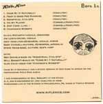
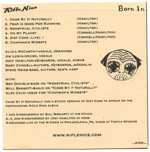

Project: cfdv.org
CFDV.org is the website for the The Chromatography Forum of Delaware Valley. Chromatography is a discipline of chemistry which is used to separate mixtures for analysis. For example, when your aspirin is tested to be 99.7% pure that was determined with chromatography by an analytical chemist. Likewise when your urine is tested to contain marijuana that was also determined by chromatography. Chromatography is a complex science and is used extensively in the pharmaceutical industry- an industry which has a large presence in the Delaware Valley.
Born In (Rifle Nice EP)
 

Image effects courtesy of Drupal’s Lightbox 2 module using jquery.
Jody Hamilton the Assassin

Jody Hamilton the Assassin continues to beat me in Google ranking. It's a tough fight when you're just a weakling going against a former WWE wrestler. If I were to eventually overtake him, it would be bittersweet anyway, after reading his heartbreaking plight.
Song: Your Archetype
'Your Archetype' is among the set of songs that can be downloaded here
Project: OnlyAlumni.com
One project I’m currently working on which is already live is OnlyAlummni.com.
Instead of having to build the entire site, I have a smart client who set up the site and had me work only on the trickier (fun) parts of this project. OnlyAlumni is a social networking site with about 8000 colleges, fraternities and sororities which operate as Drupal organic groups. This has been a great project for me to go much more in depth with organic groups and related modules.
Me, Master Han, and the Pizza Boy
This comic was drawn by the amazing Alina Josan and written by me about my dear friends Master Han and the Pizza Boy (as told by the Pizza Boy).
Update: The jquery magnifier wasn't working well for a lot of people, so I redid the javascript. Credit now goes to Mihai Parparita for writing this magnifying script. Be my QA and let me know how it works on your browser.
Teleport module
I am loving this drupal 6 teleport module. Thank you ‘incidentist’. It really is quicksilver for drupal. You type in a few letters and it autocompletes paths you might want to visit- no mouse involved. For example, to post this story I pressed ctrl-T ‘stor’ enter-enter, and it took me to node/add/story.
Admin_menu: my loyalties have shifted. Our time together was pretty good, but you can’t compete with keyboard shortcuts.
Unreleased Songs
Yesterday I received the nicest possible email from one Mr Bob King, the best fan a song-writer could hope to have. Bob took the time to go in-depth into my old songs, commenting on them on a level I would have never thought achievable and blowing up my creative vacuum on a level matched only by my ex-bandmate Rory Connell.
Lullabot trip - Portland
I just got back from Portland where I took Lullabot’s advanced drupal development course. Not only did the class take me to a wild new level of Drupalhood, but I was blown away by how great a city Portland is. It made me feel the intense masochism of the act of living in Philadelphia. Every detail was greeting me with unexpected good things, as opposed to Philly where every detail is just another slap in the face. Free fast wireless in their airport. Spotless trains coming every five minutes and asking you to pay on the honor system.

{kind=link}